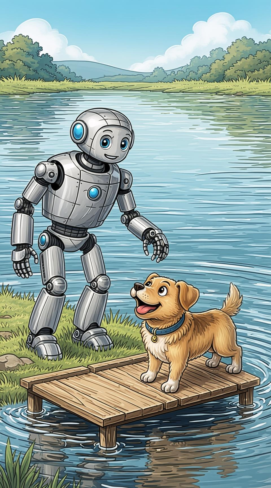
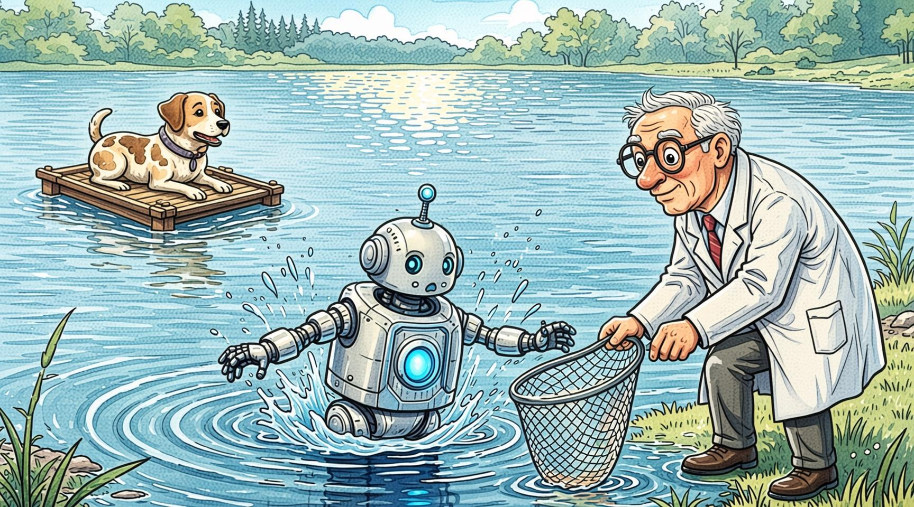
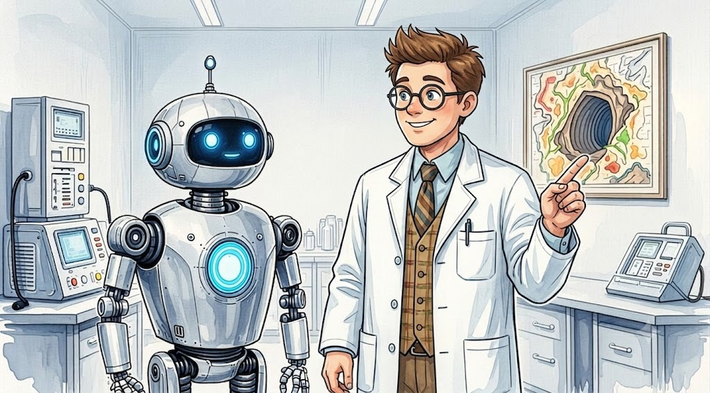
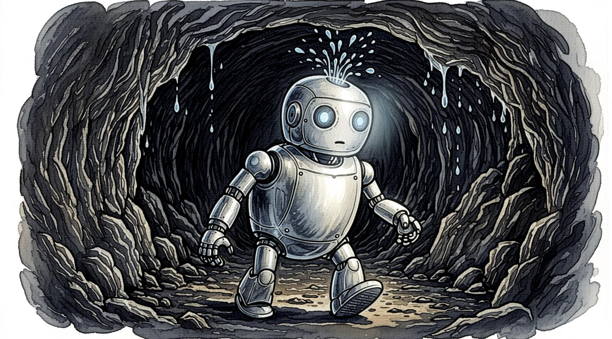
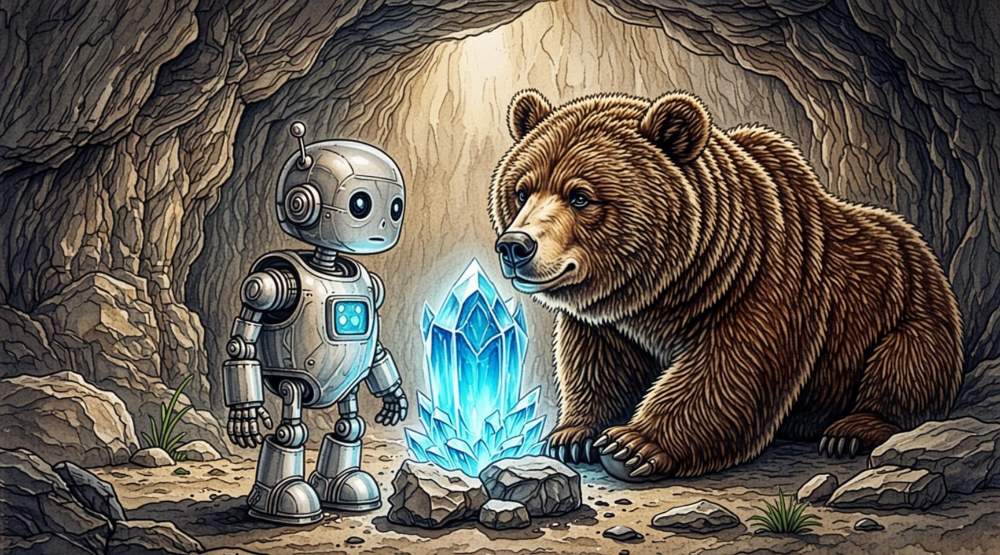
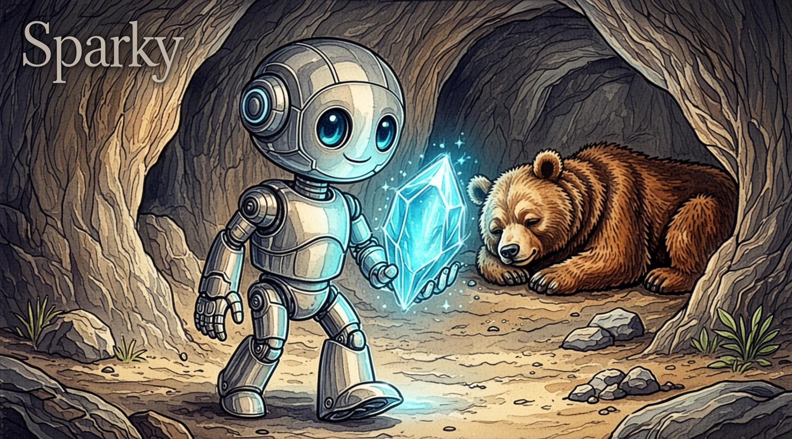
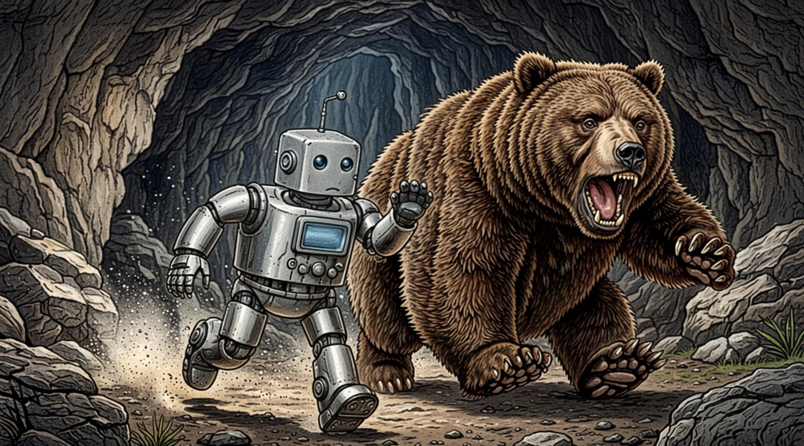
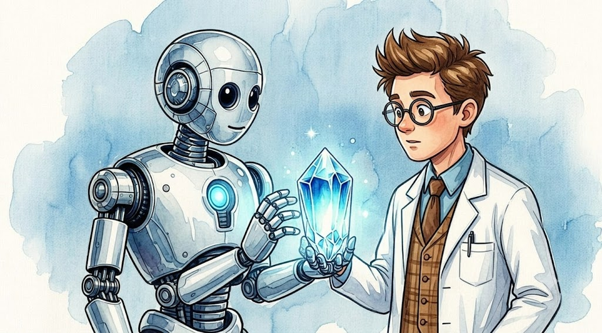
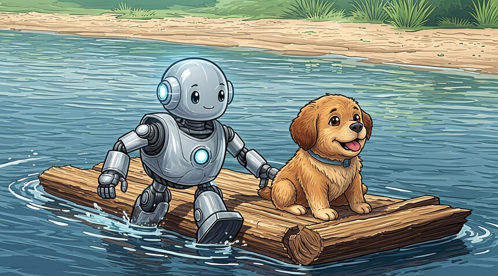
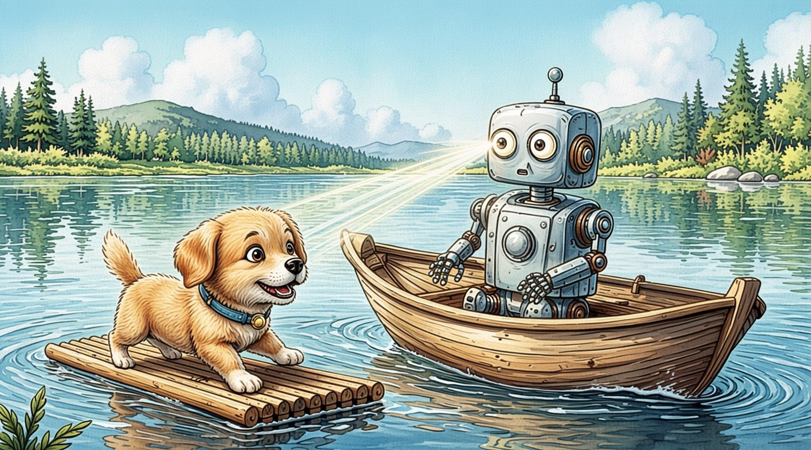

Sparky and his friend, a little brown dog, are playing near the Big Lake. The dog chases a blue butterfly. He jumps onto a wooden raft. Snap! The rope breaks. The raft floats away! The dog is stuck.
Sparky's Water Rescue

Developed by Sinan
1 / 10
The Short Circuit (Try Again)

Sparky jumps into the water. Splash! But water and robots do not mix. BZZZZT! Sparky freezes up. The dog looks scared. Dr. Vic runs out with a net and pulls Sparky back to shore. "You need a water shield, Sparky!" he says. Let's try again.
2 / 10
The Aqua-Shield

Sparky runs to the lab. "Dr. Vic! The dog is on the water. Can you make me safe from water?" Dr. Vic smiles. "Yes! I can build the Aqua-Shield. But it needs a Blue Crystal from the Dry Caves. Go find one!" Sparky runs to the caves.
3 / 10
The Drip, Drip, Drip (Try Again)

Sparky goes into the Wet Tunnel. Drip, drip! Water falls from the ceiling. It gets into Sparky's neck bolts. Zap, zap! His gears get rusty. Clank! He has to roll back to the lab for oil. Let's try again.
4 / 10
The Sleepy Bear

Sparky goes into the Rocky Tunnel. It is dry. He sees the Blue Crystal! But a big, brown bear is sleeping right next to it. Sparky has to get the crystal without waking the bear.
5 / 10
The Crystal is Ours!

Sparky lifts his big metal feet. Tip, toe, tip, toe. He is very quiet. He picks up the Blue Crystal. The bear snores, but does not wake up. Sparky sneaks out of the cave! He runs back to the lab.
6 / 10
The Loud Roar (Try Again)

Sparky yells, "Wake up, bear!" The bear wakes up. He is very grumpy. Roar! The bear chases Sparky out of the cave. Sparky runs away fast. He did not get the crystal. Let's try again.
7 / 10
The Waterproof Robot

Sparky gives the Blue Crystal to Dr. Vic. Dr. Vic puts it in Sparky's chest. Click! The Aqua-Shield turns on. Sparky's metal body glows soft blue. "You are waterproof now!" says Dr. Vic. Sparky runs back to the lake. The raft is far away.
8 / 10
The Underwater Path (Ending 1)

Sparky dives into the lake. Glub, glub. The water does not hurt him! He swims under the raft. He uses his strong robot arms to push the raft all the way back to the shore. The dog is safe! Sparky is a hero!
Developed by Sinan
9 / 10
Start Over 🔁
The Fan-Boat (Ending 2)

Sparky finds a small boat with a fan. He turns on his eye-light to see in the dark water. He drives the fan-boat very fast. Vroom! He reaches the raft. The dog jumps into the boat. They drive back to shore. Sparky is a hero!
Developed by Sinan
10 / 10
Start Over 🔁